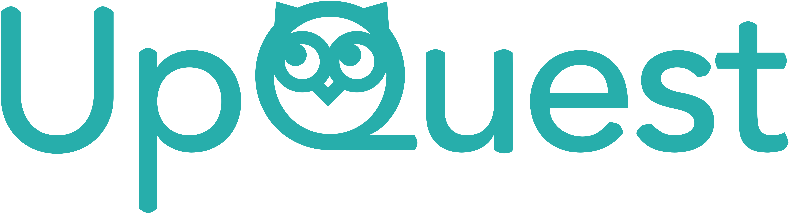
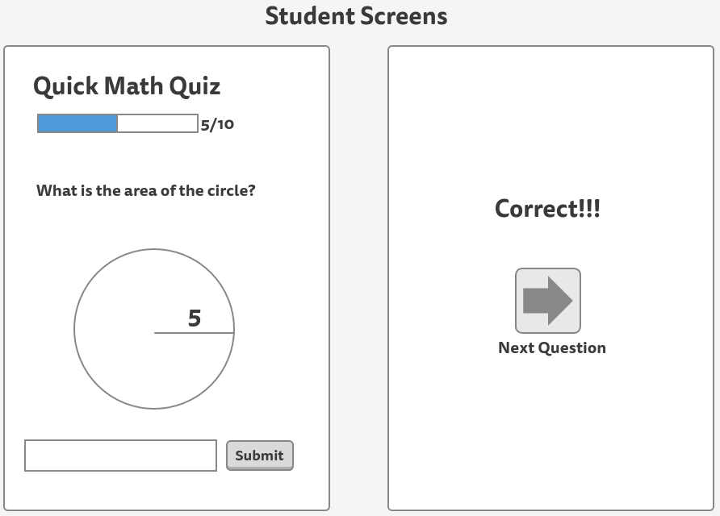
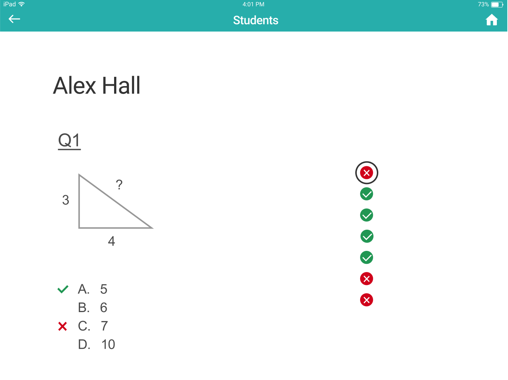

This is a class project for CS 147: Introduction to Human-centered Interaction Design at Stanford. I worked with 2 engineers to create and build an IPad app from scratch.
My role: founder, designer, and user tester
Problem/Solution
K-12 teachers face a problem that they start the school year with limited information about the knowledge level of their students. In the remainder of the school year their students' progress is tracked on an ad-hoc basis with quizzes. Our application enables teachers to rigorously assess their students' knowledge levels so that they can adjust their educational plans more accurately.
Constraints
- This class centers on mobile app design. Thus our product has to be built for mobile devices, while the nature of our app suits the web platform better.
- Since this is a class project, we didn't have real data for feedback and had to rely on user interviews. However, our target users (K-12 teachers) are hard to access. We were only able to get teachers as our testers in the early stages. After the low-fi prototype phase, all decisions were made based on our reasoning and feedback from class.
Process
Needfinding/User research
We started by interviewing elementary and secondary school teachers about the pain points in their teaching. Some issues that came up frequently with our interviewees included: the vastly different knowledge levels among students, the difficulties in assessing students, too much time needed for lesson planning, and behavioral issues of the students. In general, teachers felt that they had so little time but so much work to be done. Thus, we explored various ways to frame the problems and came up with three “how-might-we”s:
- How might we get data on student’s knowledge levels?
- How might we let teachers search many lesson plans for key terms and ideas?
- How might we make students understand why they should focus on their current materials?
We went on to explore potential solutions to the questions. We finally arrived at three most promising solutions addressing the first two questions.
- Modular, standardized lesson plan format (HMW 1)
- Optical character recognition for physical lesson plans that teachers upload (HMW 1)
- Gamified system to reward assessments (HMW 2)


We created three experience prototypes and tested them on three teachers. The prototype that was most accepted was the gamified system to reward assessments. It consisted of a teacher screen and student screen. Teachers send assessments to their students and receive instant feedback of students’ knowledge levels. Our users found the prototype to be intuitive and useful, but also pointed out the difficulties in breaking down knowledge into this level of granularity, especially for liberal arts subjects.
Low-fi prototype/Usability test
Thus we narrowed down to the problem: how might we get data on student’s knowledge levels in order to help teachers plan their lessons more efficiently?
We first came up with three user tasks for the app:
- Teachers giving assessments to students
- Students answering questions
- Teachers checking results


We explored several platforms and sketched out storyboards for each of them. We finally decided on a teacher screen on web and a student screen on mobile phones, because the screen real estates that provided by web apps make it easier to display assessment results for teachers, while phones provide easiest access for students to do the assessments. We went on to flesh out the details of the paper prototype and found three teachers to test it.


The responses were generally positive. Constructive feedback included:
- Our buttons for “action” items like creating new assessments (as the teacher), starting new quizzes (as the student), and moving from screen to screen could have been clearer and more pronounced in general.
- Our testers also suggested some features they would like to have: an aggregate view of the class performance, a test bank with curated questions, and tags on questions that could help breaking down students into sections.
- One tester brought up the issue of cheating on students’ side.
Mid-fi prototype
Incorporating feedback from the usability test, we now moved into digital interface design. We used Figma because it affords team cooperation better than any other tools we could find.
Major changes:
Considering the time limits of the project, we decided to take out students’ app and mainly focus on teachers’ side. From then on we would assume our app works with other apps that manage sending questions to students. So we changed the task of students taking quizzes into teachers managing quizzes. Here's the three tasks we finalized:
- Teachers giving assessments to students
- Teachers managing quizzes
- Teachers checking results
Another ramification from this change was that we had to make the teachers’ app into an IPad app to satisfy the course requirement of making mobile apps.
In our paper prototype user test, users found it hard to navigate between screens. In order to solve this problem, I suggested using a side menu while another team member insisted on using a hamburger menu to get rid of any visual distractions. After long debates, our teaching assistant suggested a different way of navigation. From our home screen, we can click on the tiles that represent classes to see the quiz results, while clicking on the ‘manage quizzes’ button leads you to creating and managing quizzes. Clicking on the home button on the top right corner will lead you to the homepage.
The reasoning behind this navigation was that it was hard to separate the features we had into several different sections no matter we use a sidebar or hamburger button. It seemed logical to create quizzes at a page where all the quizzes were listed and managed. So with only 2 major sections, any navigation bar seemed unnecessary.
Another related design decision was that the homepage would show the number of students that have completed the latest quiz, because we thought the most common user case would be for teachers to check results of individual quizzes. It would be most efficient if they can see the completion rate immediately. There's no need to go check results if only half of the students have completed.
.png)
In the quiz management section, we had the distinction between quiz repository and my class quizzes. The idea was that quiz repository was the place that stored all the quizzes the teacher used historically. The teacher would create quizzes in the repository, and assign them. Or he could go to his class quizzes and import existing quizzes from the repository.
Our testers suggested that manually inputting all questions would be too time consuming. Thus we added a quiz bank that integrates all quizzes made by teachers. Meanwhile, we still kept the option of manually creating quizzes.
- More granular display of student data
We introduced tags that represent specific knowledge, which could help teachers identify the weak and strong points of their students.

When showing results for the whole class, we used color coding to show the correct answers, underperforming students, etc. We chose to add signs with colors instead of changing the colors of the numbers out of concern for color blindness.
When showing a student's result for an individual quiz, we used a floating navigation consisting of circles with checks and crosses to help teachers jump between questions more efficently. Checks and crosses were added as additional clues in case of color blindness.

Heuristic evaluations
Our mid-fi prototype was then put under the scrutiny of classmates using Nielson Heuristic evaluation methods.
Problems found:
- Tasks not delineated clearly enough
To our surprise, testers found it unintuitive to put creating and managing quizzes under the same button. While some didn't notice that the tiles were clickable and lead to the quiz results.
- Quiz results page hard to decipher
The color coding on the quiz results page were unclear, because we didn't add any notes. Also, the information provided on the results page are sometimes repetitive, leading to unnecessary cluttering.
- Lack of error prevention or correction
For example, there's no way to edit an assigned quiz.
Hi-fi prototype
To address the issues found by heuristic evaluations, we made some changes while making the hi-fi prototype.
In the mid-fi prototype we had a landing page as a dashboard. Creating and managing quizzes were wrapped by the same button ”Manage Quizzes”, and tapping on the tiles of classes would lead to quiz results. To switch between tasks, users have to tap on the home button in the top right corner. In the hi-fi prototype, we took out the dashboard and added a tab bar at the bottom, which is always present. It separates the three tasks clearly and makes it easy to switch tasks. Now instead of three taps to create quizzes, one tap on the bottom bar will do the trick.
- Restructured "Quiz management" section
We incorporated the quiz repository and assigned quizzes into one page, under the "Quiz management" tab. On the left side the teacher can see all the classes he’s teaching and all the quiz repository folders he has. This change allows users to see the parallel relationship between repository and assigned quizzes, and allows a quick overview of all the classes and repository folders at first glance.
Another change is in the way one assigns quizzes. Before, one has to import quizzes from the repository to assign, but now he can assign quizzes directly from the repository.
- Reorganized quiz results page
In the older version, we had a histogram of the correction rate for each question and a chart that shows answer distributions for each question. Green lines under the percentage signal the right answer, while red dots signal that the percentage is under 60%. In the latest iteration, we made a huge change. We now have a histogram of student scores to show the overall performance of the class. Right under it are bar charts representing the correction rate of each question/tag/student. Tapping on the buttons on the left leads to the details of the question. We believe this way we avoid the information overload and unnecessary repetition that was present in our older prototype.

- "Edit" buttons for assigned quizzes
In our previous version, there’s no way to edit a quiz once it is assigned. We added an ”edit” button in the hi-fi prototype, which allows one to edit the due date of an assigned quiz. But to edit the quiz itself, one still needs to go to the quiz repository, because the same quiz can be assigned to different classes, changing it in the repository would be more efficient.
Further changes
After the project officially ended, I felt that there were issues that we left unresolved. So I continued to iterate on the prototype on my own and made some changes.
A prototype of the app can be seen here.
Major changes:
In the hi-fi prototype, one can only edit the contents of a quiz in the repository. This is not efficient, as the teacher might be looking at a quiz she assigned for one class and realize that there are edits needed, and have to go to the repository to look for the quiz.
But the challenge is, if we allow teachers to edit a quiz in a class, should the changes be reflected in all instances of the quiz? What if the teacher just want to change the quiz for one class? What if the quiz had been used in previous years? Should we create a new copy?
I decided that teachers will be given the options of changing all instances or only one. If he chose to change all, all the instances of the quiz in the current school year will be changed. But the instances in previous years remain intact. The quiz repository is thus organized by school year. Each folder contains all the quizzes that are used in one school year. Assigning a quiz from previous years automatically creates a copy of the quiz in this year's folder.

I changed the "quiz repository" to "quiz library" to follow conventions in the EdTech field. I also changed the navigation bars. "+ New quiz" became "Quiz bank" because editing existing quizzes also take place here. "Quiz management" became "My quizzes" because management doesn't seem to be a commonly used word in UI. Since the last tab is "Quiz results", "My quizzes" would not be confusing. Plus, the icon for "My quizzes" mimics the layout of the page, which also serves as a cue for users. The icons were added to make the funtions of each tab more clear.
In previous prototypes we didn't quite flesh out the filter for quiz bank. Thus I changed the filter to allow more user freedom.

We didn't flesh out the way to use existing quizzes in the quiz bank. I decided that the user should be able to take the whole quizzes or pick questions from them.

Key learnings
- User feedback is the key to creating better experience, and the most convincing argument for making decisions.
There were times when my teamates and I had disagreements. In the end, it was always feedback from user tests that drove us to a consensus. Unfortuanately we can't have real data on this class project, which bothers me as I consider myself a highly data-driven person.
- The importance of fast prototyping.
Along the same vein, turning interfaces into a working prototype really helped us in making decisions. We spent too much time discussing the flow and interfaces. But once a working prototype was in place, a lot of design problems started to show, even without user tests. Thus we were able to make changes accordingly.
- Collaboration between designers and engineers is hard but rewarding.
As a designer, I tend to look at things differently than engineers. One thing I often ignore is the difficulty in implementation, while engineers might not be as great in seeing the glitches in user experience. But overall we succeeded as a team, because we respected each other's opinions and remained open-minded towards reasoning and user feedbacks. The project also prompted me to continue learning to code because I wanted to understand the point of view of engineers better in my future projects.
- The importance of setting up deadlines.
Design can never be perfect. Without deadlines, it is easy to drag on and on and spend too much time on the nitty-gritties. This is a problem I encountered after I started to work on my own.